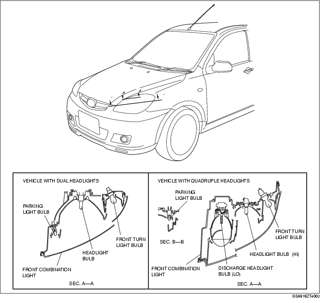
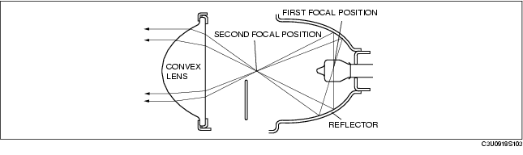

FRONT COMBINATION LIGHT CONSTRUCTION
id091800100700
• A headlight with built-in front turn light and parking light has been adopted for design improvement.
• A discharge headlight has been adopted for vehicles with quadruple headlights (low-beam) that emit the white light resembling the sunlight illuminated over a wide area.

Projector-type Headlight
• Light emitted from the first focal position is projected off the reflector, gathered at the second focal position, and output through the convex lens.
